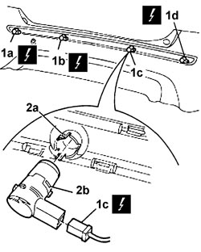

5580H36 PARKING SENSOR SYSTEM REAR SENSORS - R.R. WITH REAR BUMPER REMOVED
- Path
- Procedures > 55 ELECTRICAL EQUIPMENT > 5580 SPECIAL ACCESSORIES > 5580H PARKING OBSTACLE DETECTION DEVICE > 5580H36 PARKING SENSOR SYSTEM REAR SENSORS - R.R. WITH REAR BUMPER REMOVED
- Kind
- repair procedure (removal / refitting; the operation number is the code)
- Applies to
- all engines; all production periods
- Interactive page
- https://sloeber94.github.io/elrnDB-fCrm/en/#/194000823
Applies to: all engines; all production periods
 Removing
Removing
 Refitting
Refitting- Turn the ignition key to the OFF position.
- Disconnect the negative battery terminal.
Description | Connector | |
|---|---|---|
BATTERY |
- With the bumper removed, perform the following operations at the bench:
1. Disconnect electrical connection (1a) or (1b) or (1c) or (1d) from the relevant parking obstacle detection sensor.
Description | Connector | |
|---|---|---|
1a | PARKING SENSOR UNIT |
Description | Connector | |
|---|---|---|
1b | PARKING SENSOR UNIT |
Description | Connector | |
|---|---|---|
1c | PARKING SENSOR UNIT |
Description | Connector | |
|---|---|---|
1d | PARKING SENSOR UNIT |
2. Release the relevant parking obstacle detection sensor (2b) from anchorage clips (2a) and remove from the bumper.

Applies to: all engines; all production periods
Refitting
Removing- Check that the sensor is not damaged.
- Fir the parking obstacle detection sensor in its seat and secure with the anchorage clips.
- Connect the electrical connection to the relevant parking obstacle detection sensor.
Description | Connector | |
|---|---|---|
PARKING SENSOR UNIT |
- Connect the negative battery terminal.
Description | Connector | |
|---|---|---|
BATTERY |